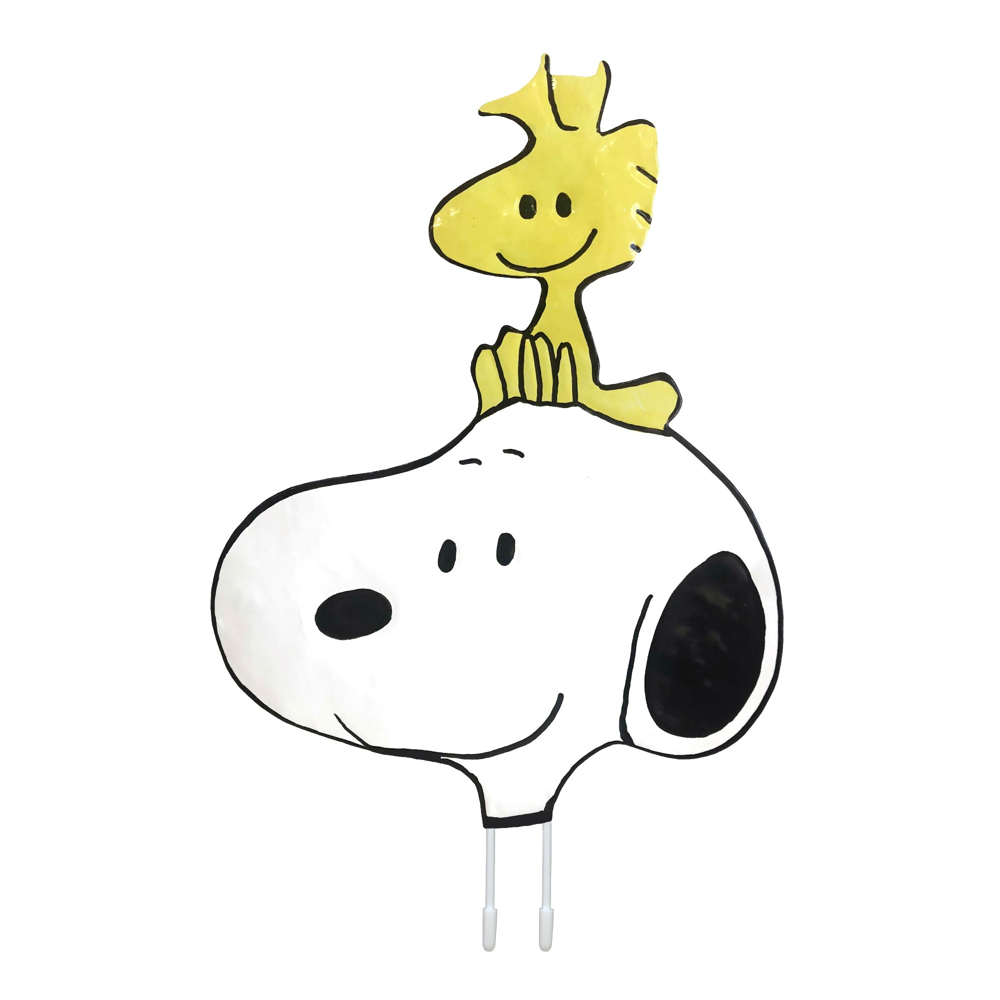

Mi hermosa Joha,
Aún recuerdo con tanta claridad la primera vez que me hablaste, todo comenzó con un simple "buenas noches, señorita", y fue como si el destino nos estuviera abriendo un camino. Desde esos primeros momentos, cuando me enviaste esos audios cantando, supe que había algo especial en ti. Sentía una conexión inmediata, una confianza que crecía con cada conversación. Desde entonces, comenzamos a hablar todos los días, y recuerdo cómo aumentó todo cuando nos vimos por primera vez. Ese día que me tomaste por sorpresa, tocando mi hombro, me robaste el aliento. Y no puedo olvidar cómo me regalaste esas gomitas... Desde ese instante, aún siendo solo amigas, me hacías sentir tan bien, tan especial, como si el universo me estuviera diciendo que algo grande estaba por venir.
Poco a poco, empezaron a surgir esas pequeñas indirectas, y tu forma de tratarme comenzó a confundirme. Empezaste a llamar mi atención de una manera que no había experimentado antes. Sentía que quería estar contigo más y más, hablar más contigo, conocerte en cada rincón de tu alma. Me intrigabas, y había un interés por ti que crecía con cada momento. A veces, escuchaba canciones y automáticamente aparecías en mi pensamiento... todo era tan confuso entonces, especialmente porque yo tenía pareja y tú eras religiosa. A menudo me preguntaba si sentirías lo mismo, si solo querías experimentar, como decían algunos amigos, o si realmente había algo profundo entre nosotras.
Pero entonces, llegó el 17 de junio, esa noche mágica en la que por fin me confesaste que yo te gustaba. ¡Dios mío! Esa fue la mejor noche de mi vida. Saber que le gustaba a la persona que tanto me gustaba... fue un sueño hecho realidad. Sin embargo, también recuerdo lo difícil que fue escuchar que lo nuestro no podía ser, porque tenías pareja y por tus creencias. Aun así, en mi corazón decidí que valía la pena esperar, que tú lo valías todo.
Decidimos alejarnos, pero esa semana sin hablar fue una tortura. Fueron los peores días de mi vida, te extrañaba tanto que entendí en ese momento que tú no eras una persona pasajera en mi vida. No, tú eras la persona con la que quería estar, no solo por un momento, sino para toda la vida. Y entonces, un viernes por la noche, lo hablamos y todo mejoró. Desde ese día, nuestras conversaciones volvieron a florecer, y cada día que pasaba, me sentía más unida a ti.
Finalmente, llegó el 21 de noviembre, esa noche inolvidable en la que, a través de TikTok, me preguntaste si quería ser tu novia. ¡Obviamente, te dije que sí sin pensarlo ni un segundo! Desde ese momento, todo fue más bonito, sabiendo que ya no solo eras esa persona especial, sino mi enamorada, aunque de manera virtual. Y después, vino ese otro momento clave: el 4 de octubre, cuando me invitaste a tu casa. Yo pensé que era una broma, pero cuando me di cuenta de que no lo era, no desaproveché la oportunidad y fui.
Recuerdo lo nerviosa que estaba cuando llegué. Apenas podía caminar, me daba vergüenza hasta sentarme en tu cama. Pero poco a poco fui entrando en confianza, viendo contigo "Masha y Ladybug". Mi mente estaba ocupada pensando en decirte si querías dar ese siguiente paso... nuestro primer beso. Cuando por fin ocurrió, fue increíble. Inexplicable. Te ibas a salir de la habitación, pero te jalé hacia mí y entonces sucedió. Nuestro primer beso fue mágico, tan perfecto, tan lleno de amor. En ese momento, todo era color de rosa. Nunca había sentido algo así antes, y desde entonces supe que no quería besar otros labios que no fueran los tuyos.
Ese beso fue solo el comienzo de tantos momentos hermosos que hemos compartido: nuestras salidas, la primera vez que dormimos juntas y pude sentir tu piel cálida junto a la mía, escuchando los sonidos más hermosos del mundo. No quiero escuchar a nadie más, solo a ti, mi amor.
Gracias por cada instante que hemos compartido, por cada sonrisa, por cada abrazo. Este año a tu lado ha sido el mejor de mi vida, y sé que si sigues conmigo, serán los mejores años que jamás viviré. Quédate conmigo, mi amor, toda la vida. Como siempre te he dicho, de ti me gusta todo, desde tu inteligencia hasta tu hermosa carita y esos ojitos que me derriten. Eres una persona increíble, única, y no hay nadie como tú. Te amo con todo mi ser, mi Joha.
Gracias por ser parte de mi vida, por hacerla más bonita y especial. Este primer aniversario solo es el comienzo de todos los que nos esperan juntas. Quiero estar contigo siempre, mi amor. Para mí, eres perfecta, y no quiero a nadie más que a ti.
Te amo infinitamente, mi vida. Sigamos construyendo momentos y recuerdos, porque estoy segura de que juntas seremos invencibles. Gracias por ser tú. Gracias por existir y por amarme como lo haces. Te amo para siempre,
Con todo mi amor,
Tu JhoabBonita